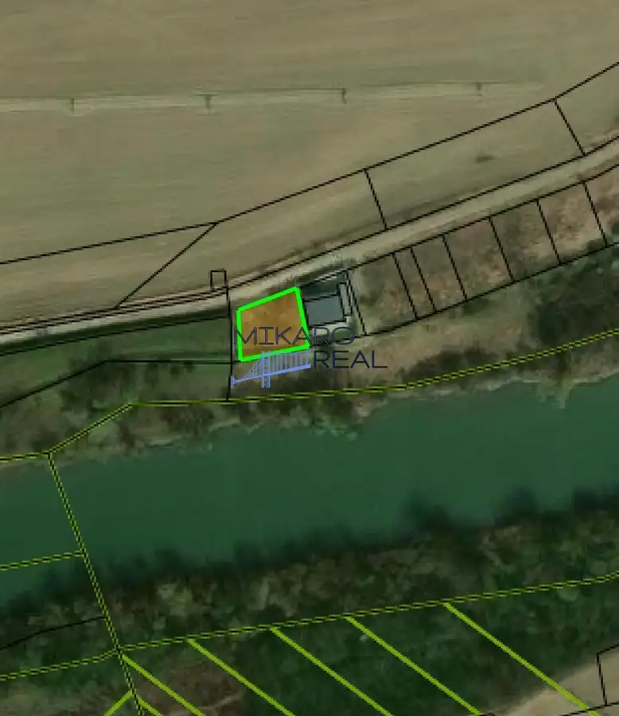
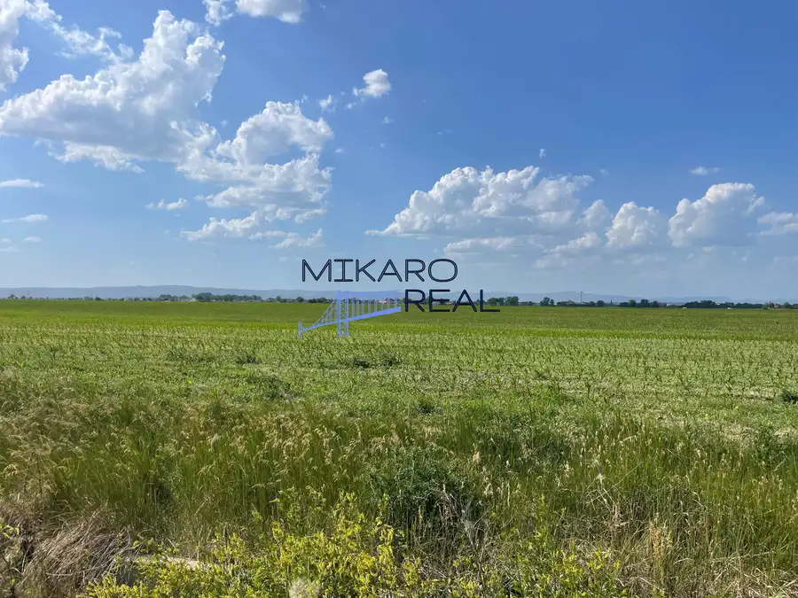

Pozemok pri Malom Dunaji - Nová Dedinka - Zlatý karas
Nová Dedinka



- Plocha555 m²
O nehnuteľnosti
POZEMOK PRI MALOM DUNAJI – ZLATÝ KARAS, NOVÁ DEDINKA | 555 m²Pracujete z domu? Milujete prírodu, pokoj a súkromie? Alebo ste vášnivý rybár a hľadáte miesto, kde môžete bývať len pár krokov od vody?Ponúkame na predaj jedinečný pozemok s výmerou 555 m² v obľúbenej lokalite Zlatý Karas pri Malom Dunaji, v katastrálnom území Nová Dedinka okres Senec.Táto lokalita osloví najmä ľudí, ktorí nechcú bývať v preplnených satelitných štvrtiach, kde dom od domu delí len plot. Namiesto toho tu nájdete pokojné prostredie, zeleň, vodu a príjemnú komunitnú atmosféru.Výhody lokality•pozemok sa nachádza len pár metrov od brehu Malého Dunaja•Malý Dunaj je pokojný nížinný tok s miernym prúdom, obľúbený medzi rybármi, vodákmi a milovníkmi prírody •tok je technicky upravovaný a monitorovaný vodohospodármi, v oblasti fungujú aj vodomerné stanice SHMÚ vrátane stanice Nová Dedinka •krásne prostredie lužných lesov a ramien Žitného ostrova•tichá lokalita mimo hlavných ciestNapriek prírodnému charakteru je lokalita veľmi dobre dostupná:•centrum obce Nová Dedinka približne 3–5 minút autom•Senec približne 10 minút•Bratislava približne 20–25 minút autom podľa dopravnej situácieParametre pozemku•výmera: 555 m²•tvar: mierne skosený lichobežník•šírka od prístupovej cesty: cca 24 m•šírka pri Malom Dunaji: cca 27 m•dĺžka strán: cca 20 m a 23 m•prístup po nespevnenej komunikáciiInžinierske siete riešené v okolí•voda riešená studňou•odpad formou žumpy•možnosť napojenia na elektrinu v blízkosti pozemku•k dispozícii UPI (územnoplánovacia informácia) na celú lokalituV okolí sa nachádzajú novostavby domov aj rekreačné nehnuteľnosti, čo vytvára príjemné spojenie bývania a oddychu. Lokalita ponúka výnimočný kontakt s prírodou a zároveň zostáva v komfortnej vzdialenosti od Bratislavy.Cena125 000 € – vrátane kompletného servisu realitnej kancelárieZabezpečíme pre Vás kompletný právny servis, katastrálne konanie, správny poplatok na kataster prípadne pomoc s financovaním a asistenciu až po odovzdanie nehnuteľnosti.Kontakt:Mgr. Anna Markusová, RSc.akreditovaná realitná maklérka0910 429 439markusova@mikaroreal.sk
Parametre
- Druh
- Pozemok pre rodinné domy
- Dátum zverejnenia
- 01. 06. 2026
- Dĺžka pozemku
- 23
- Elektrina
- Nedostupné
- Funkčné využitie
- Výstavba chaty
- Odpadové vody
- Nedostupné
- Plocha pozemku
- 555 m²
- Plyn
- Nedostupné
- Pripravenosť k výstavbe
- Schválené v územnom pláne
- Prístupová komunikácia
- Hlinená - nespevnená
- Terén pozemku
- Mierne svahovitý
- Typ
- Predaj
- Voda
- Nedostupné
- Územie
- Extravilán
- Šírka pozemku
- 24